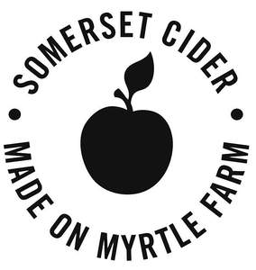

Trade Mark Journal No.2025/013 28 March 2025
UK00004167178 28 February 2025 (21,24,25,32,33)

- Class 21
- Aluminum water bottles; Beverage coolers [containers]; Beverage glassware; Beverageware; Bottle coolers; Bottle openers; Bottle pourers; Bottles; Coasters (tableware); Cookware; Drinking cups; Drinking flasks; Glasses [drinking vessels]; Glassware; Jugs; Mugs; Pitchers; Tableware; Thermal insulated containers for food or beverages; Tumblers.
- Class 24
- Bar cloths; Banners; Cloths; Coasters of textile; Glass cloths [towels]; Hand towels; Mats [coasters] of textile; Mats (Drip -) of textile for glasses; Table cloths; Table linen; Table runners; Tea towels; Textile fabric; Towels.
- Class 25
- Tops; T-Shirts; Shirts; Rugby shirts; Sweaters; Shorts; Trousers; Dresses; Jackets; Coats; Gilets; Outerwear; Gloves; Scarfs; Hats; Beanie hats; Bobble hats; Sun hats; Caps; Headwear; Apron; Underwear; Socks; Shoes; Footwear; Slippers; Nightwear.
- Class 32
- Alcohol free beverages; Alcohol free cider; Non-alcoholic beverages; Non-alcoholic beverages containing fruit juices; ; Beverages (Non-alcoholic -); Carbonated non-alcoholic drinks; Carbonated soft drinks; Cider, non-alcoholic; De-alcoholised drinks; Flavoured carbonated beverages; Fruit beverages; Fruit beverages (non-alcoholic); Fruit-flavoured soft drinks; Fruit-flavoured beverages; Fruit flavoured carbonated drinks; Non-alcoholic carbonated beverages; Non- alcoholic drinks; Non-alcoholic flavoured carbonated beverages; Non-alcoholic fruit drinks; Soft drinks; Apple juice beverages; Juices; Preparations for making beverages; Insofar as non-alcoholic cider and cider-based drinks are concerned all being produced in somerset ; Ale; Beer; Beer and brewery products; Beer-based beverages; IPA (Indian Pale Ale); India pale ales (IPAs); Lager; Low alcohol beer; Craft beers; Flavoured beers; Pale ale; Stout.
- Class 33
- Cider; Ciders; Dry cider; Sweet cider; Perry; Beverages (Alcoholic -), except beer; Alcoholic beverages [except beers]; Alcoholic beverages, except beer; Alcoholic beverages (except beer); Alcoholic beverages containing fruit; Alcoholic beverages of fruit; Alcoholic fruit beverages; Low alcohol cider; Low alcoholic drinks; insofar as cider and cider-based drinks are concerned all being produced in Somerse t .
Thatchers Cider Company Limited
Representative: Stephens Scown LLP